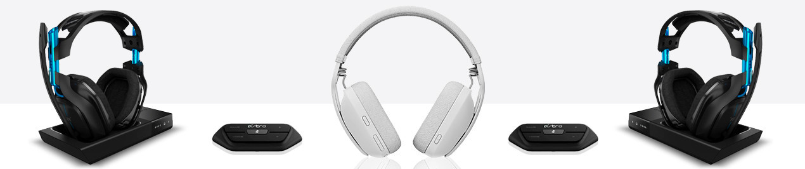
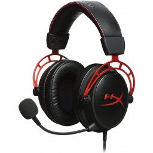

TechNova
Inicio
Productos
Registro

Productos
Audífono Hyperx Cloud Alpha S 7.1 Surround Sound
S/. 319.90
Añadir al carrito

Audífono Hyperx Cloud Alpha PRO Gaming Headset
S/. 296.90
Añadir al carrito
Audífono Hyperx Cloud Core Headset 7.1
S/. 298.90
Añadir al carrito